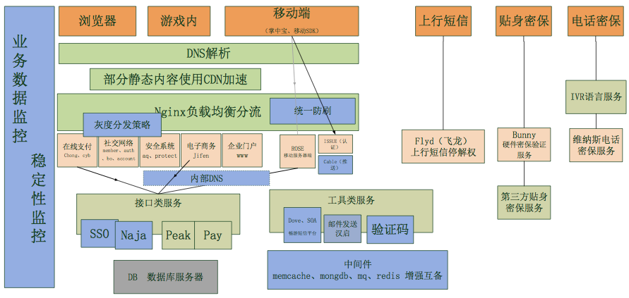

My Online resume
郭红俊的简历
下载链接： PDF
姓 名： 郭红俊
性 别： 男
民 族： 汉族
出生日期： 1976年05月19日
工作年限： 15年（1999年至今）
户 口： 山西省新绛县城关镇
现居住地： 北京
身份证： 142726197605190035
电子邮件： ghj1976@hotmail.com
移动电话： 13910951001
技术BLOG： http://cnblogs.com/ghj1976 http://blog.csdn.net/ghj1976
· 2013年6月至2014年3月，搜狐畅游平台开发部用户中心(所有游戏都通用的注册、登录、安全、充值、移动掌中宝等业务)的架构师。除了负责宏观技术架构把控、解决技术难题、人员培训外，还专门带领一批人做了数据监控决策系统、畅游统一短信平台，内部DNS的搭建等基础服务，同时规划和推进了一些核心组件。
· 2010年8月至2013年5月，关注于汽车行业、移动应用领域（北京津驰速信信息技术服务有线公司）。对企业级移动应用研发有大量的经验积累。跟天津空港传祺4S店合作设计研发了针对4S销售的Android版销售助手APP。之后带领团队针对北京汽车做过iPad上4S店销售助手软件，以及北汽E系列、绅宝的产品展示APP等。在这些产品生命周期中，我负责产品规划、架构设计、性能测试、开发进度把控、Review开发成果、核心代码开发等工作。
· 2000年7月到2010年8月，这10年时间主要负责大型社区（CSDN）的研发工作（1000万注册会员、6000万帖子，500万博客文章），对互联网上的大数据量大并发网站有大量的经验积累。期间大致按照2004年为分界碑，2004年前主要担任核心开发人员。2004后担任技术经理，领导技术团队以及担任公司技术引导者的角色带领大家学习新的技术知识。2008年后又转型担任CSDN的架构师，负责CSDN核心业务的研发工作。
· 1999年2月到2000年7月，我分别在杭州两家单位工作，分别负责一个基于Delphi开发的医院信息系统实施和一家电子商务网站的开发，在此期间获得获得CSDN专家榜13名，同时是ASP的版主，这也是我后来来CSDN的主要原因。
亲身经历并主导了CSDN网站从小到大的技术（2000年－2010年），从最初的单台挖潜力到做分布式集群都积累了丰富的经验。
自己写过爬虫，做过LoadRunner性能自动化测试和调优，对网站的性能优化经验丰富，尤其在畅游工作期间，面对游戏工作室的疯狂刷号、盗号，对网站防刷、安全、提升业务处理能力有了很多新的体会。
4年移动领域的开发、管理经验，
其中在Android领域，亲自写了很多核心代码，解决过性能、内存、动态UI和动态公式等很多问题（一些相关的技术心得请参看我的博客或微博：
http://www.cnblogs.com/ghj1976/category/291650.html ）
在iOS开发领域虽然涉及不深，但是Code Review方面还是得心应手的 。
接触软件开发行业已经有19年了，从爱好者到程序员，到资深程序员，到技术经理，到架构师。互联网及移动产品生命周期的各个环节都做出了喜人的成绩。
除了技术领域，还在下面领域有所建树：
l 产品规划设计，
l 验收管理（功能验收、性能验收）；
l 大型社区运营管理（CSDN社区）；
从2004年开始，组建和带领过不同特色的技术团队，是敏捷开发的实践者。
最多时同时管理三个软件开发项目（津驰速信时：同时管理客户关怀、绅宝C70产品展示、下一代销售助手研发，都是要到代码 Review级别，兼顾的不算）。
最近半年，在畅游主要做基础服务的技术架构，兼顾面试、人员培训等工作。尤其对企业员工的定期培训，让我直接带领的基础架构组团队能够无论在技术上还是工作的协调能力中遥遥领先于其他团队，更出色的完成任务。
虽然涉猎面很广，但是本人仍然偏爱技术，目前管理工作变多了，但代码能力并没有落下，在团队中积极推行CodeReview，亲自从代码角度带人。对碰到的各种技术难题及时进行解决，并经常书写一些底层的代码。
做为一个团队的灵魂，不仅要自己能解决问题，还要培养成员解决问题的能力，这就要求我在团队工作中遇到难题中，除了技术上能给予及时一对一指导，更需要引领解决思路的推理过程 。
因此，在畅游时，我就给自己的团队设定了一整套完整的学习任务：团队内成员每周技术分享及CodeReview(我需要对成员分享的内容进行点评指导)，部门内每个月自己要主讲一次前瞻性技术培训（未来几个月内会用到的技术）， 因此我很荣幸在2013年获得了公司颁发的“年度最佳讲师”奖项。
· 做有行业影响力、技术圈影响力的产品；
对个人有自我成就感，对公司可以搭建强壮的基础框架，提高复用性和可靠性。
· 有发言权
如果去创业公司，期望有足够分量的股份。在技术层面有发言权。
· 个人的技术偏好
经历过多种编程语言，多种编程技术的兴衰我觉得能解决未来3-5年业务预计的技术就是好技术。
同时技术的延续性和通用性让我在碰到任何新技术或者不熟悉的技术时，都可以很轻松的掌握它。
语言层次，最近关注Go语言较多，它的最小心智负担原则、CSP模型的协程可以提升单机大并发能力，同时看到很多公司都在一些关键业务领域使用它，下一个工作在需要解决大并发、大压力问题时，我仍然会循序渐进的推广Go语言。
· 工作地点的选择
家庭原因工作地点选择北京，可以出差。
n 1995年5月到1999年7月 杭州电子工业学院 会计系财务会计专业本科。虽然后续工作后没有从事这个专业，但对自己理解企业运作有很大帮助。毕业后，1999年至今15年从事的是软件开发相关工作；
n 10年以上大型社区网站开发、运营管理经验（CSDN网站）。CSDN是面向特定人群的社区，针对技术人员，提供包含论坛、博客、杂志、招聘、培训等全方面的服务。社区SNS的关系以及社区周边事宜都是在CSDN获得不断实践的。
n 连续7年微软最有价值专家称号。（2003年、2004年、2005年、2006年、2007年、2008年、2009年连续7年ASP/ASP.net方向最有价值专家）。微软MVP的介绍请参看以下链接：http://mvp.support.microsoft.com/ 。离开CSDN后，不再使用微软技术，才不再获得这个称号。
n 2010年5月获得软件系统分析师证书 .
n 2010年-2013年，三年汽车行业移动应用开发经验。汽车行业的用户群是社会的精英，对各方面的要求比较高，为了支持移动设备上用户体验更流畅、宜用，因此工作的重点是解决为此碰到的技术难题。
n 2013年-2014年，游戏行业用户中心架构经验。游戏行业是盈利高，却也是安全隐患大的行业，因此对应的各种工作室层出不穷，防刷、防盗号、提升服务器性能这方面的需求很多，这让我迅速的积累了这方面的工作经验 。
这些经历主要分成下面几类：
· 高性能、大并发的经验
· 企业级移动应用的经验
· 跟电子商务有关的网站建设经验
· 智能推荐
· 技术基础服务搭建
· 人员培训及培养
· 产品规划、设计工作以及网站运营工作
高性能、大并发的工作经验主要涉及到下面一些内容：
典型代表作：ASP版的CSDN论坛，2台服务器（WEB+DB）支撑了170万注册用户，560万帖子，4100万回复，高峰时，同时在线6000登录用户（匿名用户更多）的压力。这个架构的论坛一直到2007年国庆前，被我带领技术研发团队开发的基于.net的论坛所替代。
典型代表作：CSDN基于ASP.net(C#)做的论坛（使用win的NLB负载均衡，同时使用微软的企业服务（EnterpriseServices）技术搭建了一套基于链表的帖子列表分布式缓存，更新帖子静态文件则使用的.Net Remoting,数据库使用的按年分库）这个技术搭建的平台在我离职时，支撑了1000万注册会员、6000万帖子＋回复的业务量。
典型代表作：2010年下半年及11年上半年在津驰速信为天津空港汽车园做电子商务网站（基于PHP＋MySQL开发的ecshop改造而成）时，通过LoadRunner不断增加压力以及不断优化性能和结构。最终这个项目在上线前我们把性能优化成2台Web服务器，一个nigix前端代理，2台MySQL主从数据库，支持同时1000用户并发请求（没有思考时间）响应时间是在4秒以内（随机请求一些核心业务页面）。 优化时，主要使用了：eAccelerator和memcached缓存。
在畅游时，针对游戏工作室大量的刷账号，继而练号交易获取经济利益的严重问题。我依次规划和推进的下面事情：
服务器间通讯通过内部DNS，继而确保服务器期间通讯通过内网完成。
在Nginx上基于nginx自身的防刷limit_req和使用lua语言自己书写一些防刷策略，以及使用redis缓存防刷计数等方案，对防刷进行统一前置处理，提高通用性和效果。
验证码则除了定期更换、加强了破解预警监控（整体验证通过百分比以及几个有风险业务的验证通过百分比和总数），还规划了新的验证码方案（支持更多格式、使用Go语言开发提供单机处理能力）
不论是何种操作系统的移动端，都期望收到服务器端主动推送的信息。这个业务需求，我在津驰速信和畅游都碰到了这样的需求：
在津驰速信时，我独自一人完成了该系统服务器端基础框架和核心代码的搭建，服务器和客户端之间通讯使用WebSocket技术，服务器使用Go语言开发，其中每个客户端连接使用一个Go协程（goroutine）。
在畅游时，作为架构师跟掌中宝团队一起设计开发了这个系统，通讯使用的MQTT协议，服务器端使用C开发，上线后经过测试，单机支持10万客户端，而行业360和京东使用Go开发支持单机百万，于是规划和设计了第二版服务器端用Go实现。
Go为何能支持单机百万，是因为协程非常轻量，执行协程只需要大致4～5KB的内存，同时协程之前切换通讯不是系统控制的，是协程框架实现的CSP模型。
移动方面的工作经验是2011年在津驰速信时开始接触的。最初公司计划进军移动方面时，通过一个加油宝贝项目逐步进入了移动领域。Android方面的移动开发我具有很深的功底，这是因为不论是在津驰速信还是畅游，Android相关移动项目的核心代码都是我书写的，而且带领团队做了多轮CodeReview。
iOS的开发初略的了解，也对此做过Code Review和代码验收。具体来说主要移动方面参与的项目如下：
在汽车行业的企业级应用上使用iPAD管理业务，这可以带来如下好处：
销售顾问可以实时掌握销售和客户信息，很方便的一边跟客户沟通，一边给客户介绍车。同时实时完成客户的跟踪、预约、试驾、报价等工作。
在看到这个好处后，我所在公司由我牵头主持设计了PAD版的销售助手。并带领技术团队完成了APP开发制作（2011年8月-2013年3月期间、Android版本）（这也是我开始自学Android做的第二个项目，第一个是加油宝贝学习性的项目）。
销售助手项目是对4S店潜客进行管理，通过管理潜客，提高销售滤斗的成功率。规划设计这个系统，也同时让我对汽车行业4S店的管理有了丰富的经验。
这个系统技术上主要有下面两个复杂度：
· 业务流畅复杂，需要有多个功能点activity，组织各个功能点同时又不让系统内存益处，尤其是需要又漂亮界面情况下，这是当时碰到的一个技术难题。对这个难题的持续优化一直到我离开这家公司。
· 报价涉及到计算车险、车务、信贷，又很多种计算方案，而且要离线完成计算，这里设计和实现了动态公式，下载好公式后本地完成运算。
项目时间：
2012年08月底 – 2012年11月底（以外包人员为主功能开发阶段，3个外包+1个公司内部开发人员，我在其中负责项目管理，产品设计）
2013年12月-2013年3月 （公司开发人员3个接手改造完善这个项目，根据北汽实施部署反馈修改完善bug阶段）
2013年4月-2013年5月（我离开这家公司），规划下一个版本功能和技术架构阶段。
在为北京汽车做DLM系统的时候，除了完善我们之前4S店销售辅助系统，增强我们对4S店管理的理解，还让我们熟悉了厂商对4S店的管理要求。对汽车行业了解的更深入了。这款软件是基于Apple的企业级许可开发的，企业内部使用，没有部署在AppStore上。
在iPAD上通过旋转外饰看车辆，动态展示视频图片，显示来自服务器同步下来的卖点Html5页面来全方面的展示北京汽车E系列。
最初这个项目是使用北汽企业许可部署在企业内部的，后经过重构后放在AppStore了。https://itunes.apple.com/cn/app/e-xi-lie/id649241168?mt=8
产品的展示基于html5开发，这样可以方便的发布新的展示页面。
在这个项目中我的主要工作：
l 使用Axure RP设计该产品的原型图。
l 在客户确认后，协调美工做UI效果图制作。
l UI效果图完成后，协调安排做成iPAD上能展示的Blue Print的.
l 设计后台需要实现的服务器接口。
l 带外包团队实现iPAD端功能开发，协调公司内部后台开发团队进度和实现。
l 在外包团队撤掉后，培养公司自己的团队接手这部分开发，并组织code Review分析之前实现的代码，给出整改建议，协调改进。
北汽绅宝是一款中高档车，为了体现中高档的感觉，要做一款APP在apple store上进行产品展示。展示的功能包括：外饰360度展示、内饰全景720度展示、动态卖点萨博历史展示、经销商列表和地图、产品配置表、公告展示等功能。
这个功能的原型图设计是我完成的，之后安排美工完成UI效果图制作，BluePrint效果图制作。之后的开发由我协调安排人员完成。
这个产品展示由于需要比较煊的交互效果，改用套用几套设计出来的原生展示模版的技术实现。
这个项目开始时间是2013年3月，5月正在收尾阶段。
https://itunes.apple.com/cn/app/shen-bao/id651834861?mt=8
最初是畅游安全团队的动态密码的手机版，后扩展功能，做整个畅游游戏的助手。
我在其中的承担架构师的角色，设计了多个版本，同时针对其中Android版碰到的很多技术难题进行了解决。
http://jia.changyou.com/
电子商务的工作主要集中在两个项目中：
空港汽车园电子商务平台主要目的是把天津空港汽车园现有的汽车销售和客户服务职能进行网络延伸,使空港客户可以便捷地了解空港汽车园在售的产品信息,提交购买意向,和申请客户服务。
网站地址：http://www.tjautoland.cn/
我在这个项目中工作主要是验收，包括带领人员功能测试、性能测试，性能优化。最终这个项目在上线前我们把性能优化成2台Web服务器，一个nigix前端代理，2台mysql主从数据库，支持同时1000用户并发请求（没有思考时间）响应时间是在4秒以内。这是我加入津驰速信的第一个项目。
同时这个项目的支付采用农行的支付接口，相关的具体开发工作也是我完成的。
这是我在CSDN时（2003年），完成的一个专门买计算机领域图书的电子商务网站。我在这个项目中主要承担核心开发人员。在很短的时间内加班完成了这个电子商务网站。后来网站被dangdang收购。
这是一个2011年5月到8月的一个研发性的项目，通过网站展示爬虫爬取的一些跟车有关的知识文章。爬虫部分是我当时用.net语言自行开发完成的。
展示的权重算法核心时预先定义了几套模版，根据文字的多少，图片的大小，剩余文字个数计算出使用不同模版下的分值，选择分值最高的那套模版。具体的展示改造自开源框架TreeSaver(http://treesaverjs.com/ )。
内容的匹配选择则是根据人的社交特征分Analytical、Driver、Amiable、Expressive四种类型，不同类型买车时对内容的需求不同，而内容是有不同关键字的以及理性和感性评价，根据这些信息计算出适合用户阅读的内容。
在CSDN时，我还参与了TAG标签项目，根据TAG标签进行智能推荐。正因为有之前的这些推荐的算法积累，才在杂志话阅读时做了相关算法的完善。
从CSDN开始，公司核心的代码都是我开发或者代理团队开发的。比如在畅游时，针对发现的问题，我的思路是搭建一个个职责单一的通用基础组件，提升整体架构稳定及可靠性。已经完成的这部分包括：
在畅游入职后，针对缺乏数据支持进行决策，数据监控不到位的情况，主持开发了Pulse数据监控及决策系统，
这套监控系统支持延迟不超过10分钟的实时数据分析，同时借用公司数据仓库的接口做到了永久数据保存和分析。业务覆盖了部门各个业务线。在充值实时监控上，还实现了全国分地区地图显示的功能。
我在其中的角色：项目的产品、技术负责人。负责项目最初的需求收集，技术设计，并带领2个技术人员完成这个功能。其中碰到的技术难题以及部分数据采集、阀值报警的Golang代码是我亲自书写完毕的。
这个监控平台技术上复杂点主要在下面几点：
· 实时数据监控的数据实施到达。
· 比较煊的在地图上展示全国各地充值情况。
针对2013年11月短信治理，公司决定对外多接入几家短信供应商，对内进行接口封装。根据这个需求就产生了短信平台Dove。
我在其中的角色：技术经理，承担的工作主要是：短信平台总体设计，开发进度把控，关键技术难题解决。
整个项目由三个人完成：一个对外产品经理，一个技术经理（我），一个具体开发者。
针对线上发生异常时，通知开发人员不及时的问题，我自己花了2天时间用Go语言写了一个通用小工具，自动获取日志文件最新增加的内容并邮件通知给相关人。
后把这个代码做了通用性整理后发布在github：
https://github.com/ghj1976/tailMail
不论在哪个公司，人员培训和培养都是我一直主推的工作，以在畅游时（2013年6月-2014年3月）为例，我做了下面培训相关的事情，为此还获得了13年畅游平台开发部优秀讲师称呼。
· 组织技术专题学习分享
面向全部门，针对安全主题，做了专题技术学习分享。
· 针对后续产品规划，做前期技术方案评审Review。
针对计划要做的消息推送、监控、用户行为分析、数据隔离，组织用户中心核心的10余名开发做前期技术方案讨论。
· 平均每个月自己主讲一个主题
主讲过的包括：Go语言分享，Go的连接及组合，Go并发机制，如何学习Android，MarkDown，灰度发布，负载均衡，网站防刷方案，用户体验分析等等。
· 推行每周技术分享及Review制度
后续成立了一个基础架构组，专门做一些基础服务，在组内推行了每周轮流技术分享制度。
不轮是在CSDN，还是津驰速信，还是畅游，我都主持设计、规划了一些产品，在CSDN时还有段时间运营了论坛。
产品设计的关键就是要知道自己的用户群是谁，有那些特征，继而设计出满足用户需求的产品。运营时则会依据内容产生的 28原则和长尾理论，要根据这个思想重点抓关键用户和事情。
在汽车行业的企业级应用上使用iPAD管理业务，这可以带来如下好处：销售顾问可以实时掌握销售和客户信息，很方便的一边跟客户沟通，一边给客户介绍车。同时实时完成客户的跟踪、预约、试驾、报价等工作。
在看到这个好处后，我所在公司由我牵头主持设计了PAD版的销售助手。并带领技术团队完成了APP开发制作（2011年8月-2013年3月期间、Android版本）（这也是我开始自学Android做的第二个项目，第一个是学习性的项目：加油宝贝）。
这个产品在2012年5月得到北京汽车的认可，在企业DLM系统竞标中中标，在2012年8月到年底完成ipad版的定制开发（我带领3个来自不同外包公司的开发人员加公司内部一个开发人员一起做的。） 在经过2家店的试点改进后，目前正在全国推广部署。我在北汽项目中负责领导pad端前台功能开发。
2000年7月到2010年8月，我服务于CSDN网站，在这十年间，我主要从事下面工作：
http://www.cnblogs.com/ghj1976/archive/2010/03/25/1695499.html
其中的设计、运营、管理工作如下：
1、担任技术经理
2003年开始，我逐渐向项目经理转变，开始带领4个人的研发团队开发基于ASP.net的CSDN论坛。中间用到了分布式部署、企业服务搭建分布式缓存、.Net Remoting 操作远程服务器的文件等分布式的技术。
2、运营社区
之前对社区运营只是部分参与，2008年时，我同时负责论坛的开发和运营的7人团队。当时我们团队叫社区二组。年底时我们团队获得了公司最佳团队。运营的心得就是：吃自己的狗食；抓核心用户。
3、担任架构师
2009年初，CSDN网络中心改用大开发，大运营的团队模式，我也开始转型架构师。期间承担了CSDN论坛（当时数据量是1000万注册会员、6000万帖子），以及CSDN博客（当时数据量是500万博客）的性能优化和改进。
在畅游时， 根据用户访问用户中心应用的通路种遇到的问题，设计或重构了下图种蓝色部分系统。
纯技术角度，行业影响力最大的时期用的是ASP和ASP.net ， 其他语言在各个阶段根据需求都用过，最近对Go语言特别感兴趣，在推广中。
程序语言
· Delphi 在杭州作企业ERP和医院信息系统时用。
· ASP 在杭州作电子商务及到CSDN后使用，做出大型社区网站
· ASP.net (C#) 在CSDN时候用，做出大型社区网站
· JAVA 在CSDN做全文检索，在津驰速信做Android开发，在畅游做用户中心用到。
· Go 在津驰速信做消息推送，在畅游做数据采集、小工具
· Objective C 在津驰速信时带ipad团队时接触，没有深入学习。
· Html\CSS\Javasript 一直都在用。
· Siverlight 在CSDN时自学过
· Shell 脚本， 从津驰速信开始一直都在用。
数据库
· Sql Server 在CSDN时主要使用
· Mysql 从CSDN开始就持续在用
· Oracle 在畅游时使用
· Sqlite access 这些小型DB，在自己的一些工具中使用过。
其他
· Nginx 在畅游时，推行统一防刷，在nginx上基于lua写过一些防刷代码。
· Redis 同时在做防刷时，用它做过一些缓存的内容
· Memcached、mongodb 在畅游时，技术团队在使用，有过一些简单使用经验。
· 最近由于关注go，对groupcache关注较多。
为何最近关注Go比较多。
Goroutine（协程）十分轻量，Go语言可以在一个进程中执行有数以十万计的协程，依旧保持高性能。比如京东和360做的消息推送平台，可以单机支持80-100万设备连接。分布式并不是万能药，在有些场景需要集中管理，这时候如果单机处理能力提升，会对提升整体的性能和并发处理能力非常有价值。
最大的业余爱好是太极拳，我是吴式太极拳的第六代传人。从2005年开始练拳，一直坚持到现在。我相信有一个健康的体魄是做事情的最基本要求。